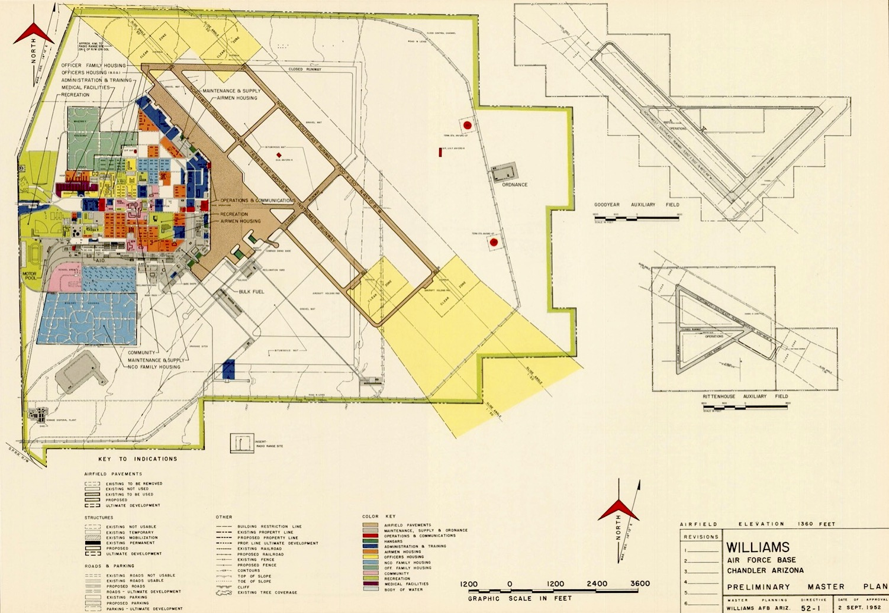
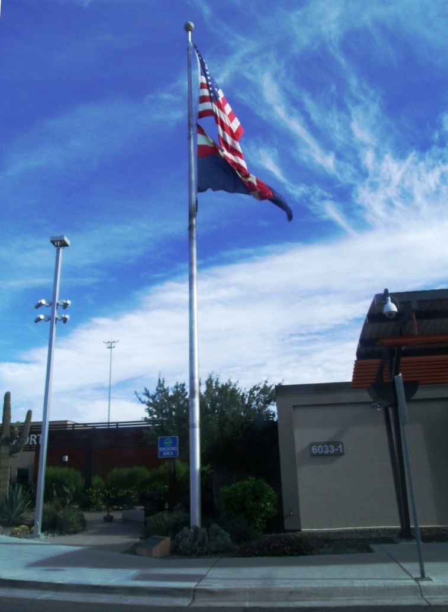
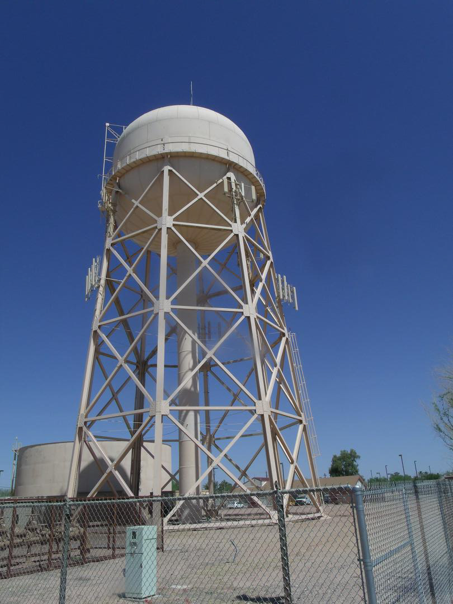
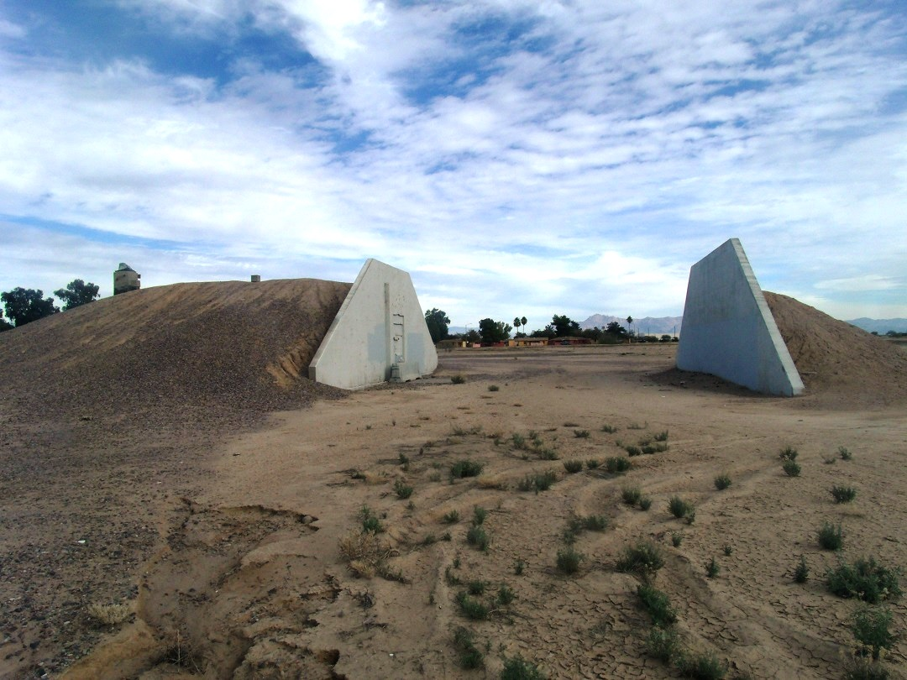
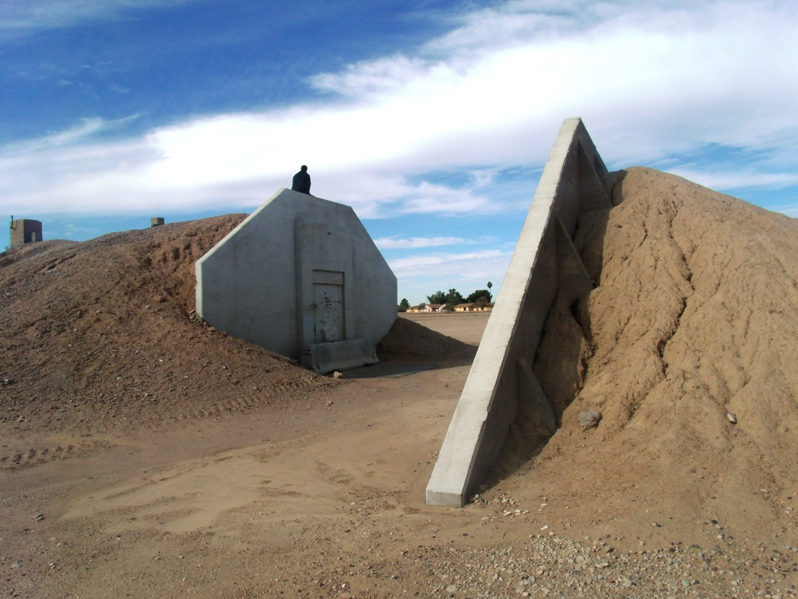
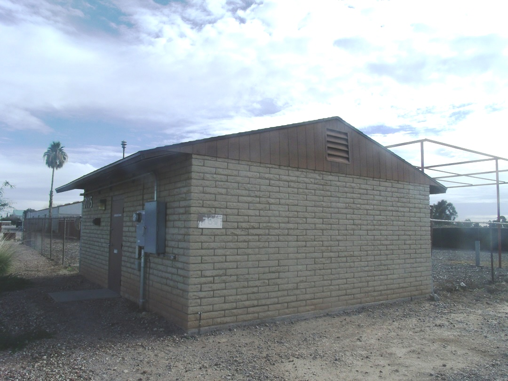
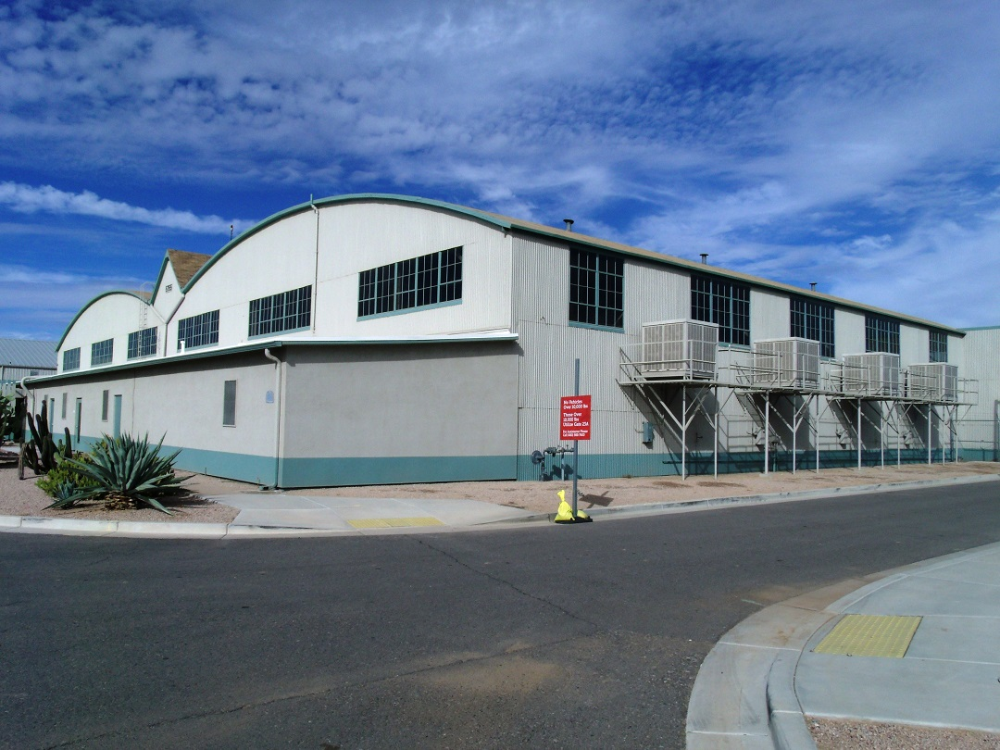
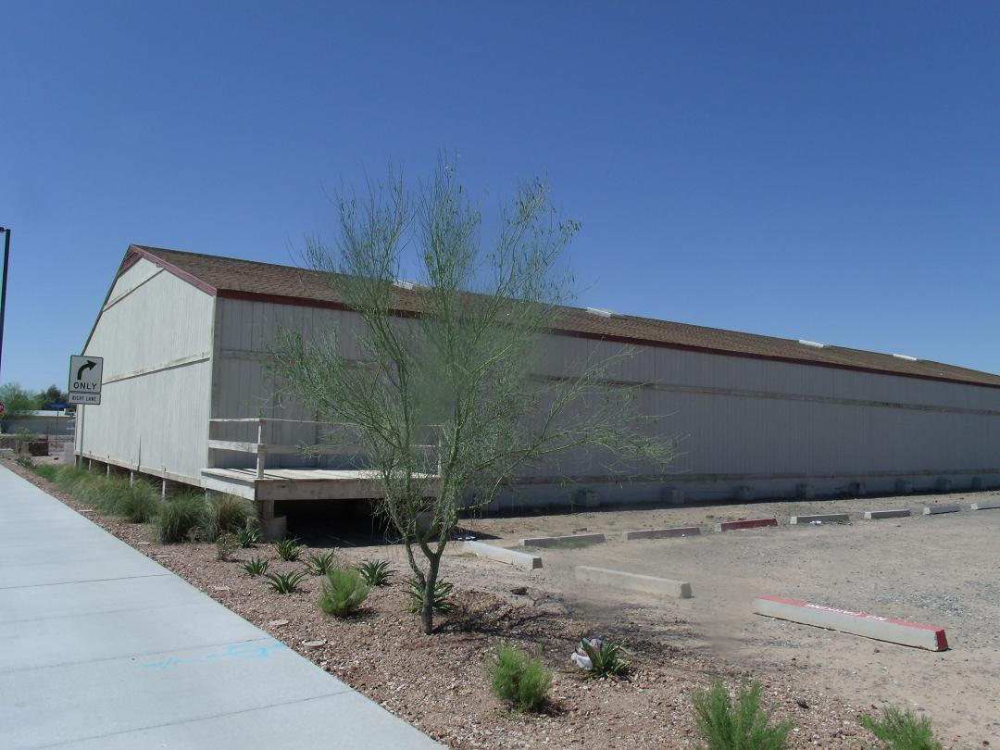

Historic resources of the Williams Air Force Base were identified in a 1995 study. Seven separate objects or buildings were listed on the National Register of Historic Places on 19 June 1995. Hover over the markers on the map to view more detailed information about each historic resource.

Flagpole
The Flagpole is historically significant as an object for its important symbolic and traditional associations with the origins and history of Williams Air Force Base and for its location as a focal point of the major axis of the base plan. Built of a standard military design, the Flagpole design and setting at one end of the former parade ground, clearly conveys its military origin and visually provides an associative link to the early development of the base.
The flagpole was once located at 10 St. between D and E Sts. at Williams Air Force Base. It is now located at the entrance of the Phoenix-Mesa Gateway Airport which is located on the grounds which once belonged to Williams AFB.
GPS Location: 33°18′25″N 111°40′45″W
The flagpole was erected in 1941 by Del E. Webb Construction Company.
Water Tower
The water tower was constructed in the winter of 1941-1942 by the Del E. Webb Construction Company. The water tower possesses the associative quality that connects it to the history of Williams Air Force Base. Listed in the National Register of Historic Places – 1995.
The water tower is located on the northeastern corner of the junction of Innovation and Unity Aves. (once known as the Jct. of 12th and B Sts.) at Arizona State University at the Polytechnic campus in the grounds that once were part of Williams Air Force Base.
GPS Location: 33°18′17″N 111°40′51″W
The water tower was erected in 1941 by Del E. Webb Construction Company.
Ammo Bunker #1
The Ammo Bunkers is a military Facility property type. The Ammo Bunkers are roughly elliptical in shape, 150’ x 80’, one-story structures of reinforced concrete construction. The arched shaped roof and walls are covered with dirt. Features of the structures include a reinforced concrete entry façade with a reinforced concrete blast wall. The blast wall was constructed to contain an explosion in the bunker. The façade is a reinforced concrete wall with a flat parapet. There is a single leaf steel door centrally located on the facade.
Ammo Bunker #1 is located southwest of Vosler Dr. (formerly Alaska Drive), at Arizona State University at the Polytechnic campus in the grounds that once was a part of Williams Air Force Base.
GPS Location: 33°17′43″N 111°40′43″W
Ammo Bunker #1 was built in 1942 by Del E. Webb Construction Company.
Ammo Bunker #2
The Ammo Bunkers is a military Facility property type. The Ammo Bunkers are roughly elliptical in shape, 150’ x 80’, one-story structures of reinforced concrete construction. The arched shaped roof and walls are covered with dirt. Features of the structures include a reinforced concrete entry façade with a reinforced concrete blast wall. The blast wall was constructed to contain an explosion in the bunker. The façade is a reinforced concrete wall with a flat parapet. There is a single leaf steel door centrally located on the facade.
Ammo Bunker #2 is located southwest of Vosler Dr. (formerly Alaska Drive), at Arizona State University at the Polytechnic campus in the grounds that once was a part of Williams Air Force Base.
GPS Location: 33°17′39″N 111°40′40″W
Ammo Bunker #2 was built in 1942 by Del E. Webb Construction Company.
Civil Engineering Maintenance Shop
Originally constructed to support the training of Army Air Corps pilots during World War II, the building witnessed the evolution of aviation technology and military strategies. Following the closure of Williams Air Force Base in the 1990s, the Civil Engineering Maintenance Shop stands as a testament to the base's legacy, symbolizing the dedication and resilience of those who served within its walls.
The Civil Engineering Maintenance Shop is located on the northeastern corner of Unity Ave. (once known as Jct. of 11th and A Sts.), at Arizona State University at the Polytechnic campus in the grounds that once were part of Williams Air Force Base.
GPS Location: 33°18′14″N 111°40′45″W
The Civil Engineering Maintenance Shop was built by Del E. Webb Construction Company in 1941.
Demountable Hangar
The demountable hangar stands as a testament to the base's dynamic history. Erected during World War II as part of the base's expansion efforts, the hangar played a vital role in supporting the training activities of the Army Air Corps. Its unique design, characterized by a modular and transportable structure, allowed for flexibility in accommodating different aircraft and mission requirements.
The demountable hangar is located at the North Apron of Phoenix-Mesa Gateway Airport in the grounds which once were part of Williams Air Force Base.
GPS Location: 33°18′40″N 111°40′11″W
The demountable hangar was built in 1942 and designed by Webb, Del E., Construction Company to resemble an enlisted aviator badge of the Army Air Force. Listed on the National Register of Historic Places in 1995, ref. #95000743.
Housing Storage Supply Warehouse
The housing supply warehouse was constructed in December 1941 by Del E. Webb Construction Company. The housing supply warehouse is significant for its association with the initial development and construction at Williams Air Force Base which is the land in which Phoenix-Mesa Gateway Airport and the Arizona State University at the Polytechnic campus are now located. Listed in the National Register of Historic Places – 1995.
The housing supply warehouse is located on the northwestern corner of the junction of Innovation and Unity Aves. (once known as Jct. of 11th and A Sts.), at Arizona State University at the Polytechnic campus in the grounds that once belonged to Williams Air Force Base.
GPS Location: 33°18′14″N 111°40′49″W
The housing supply warehouse was built by Del E. Webb Construction Company in 1941.